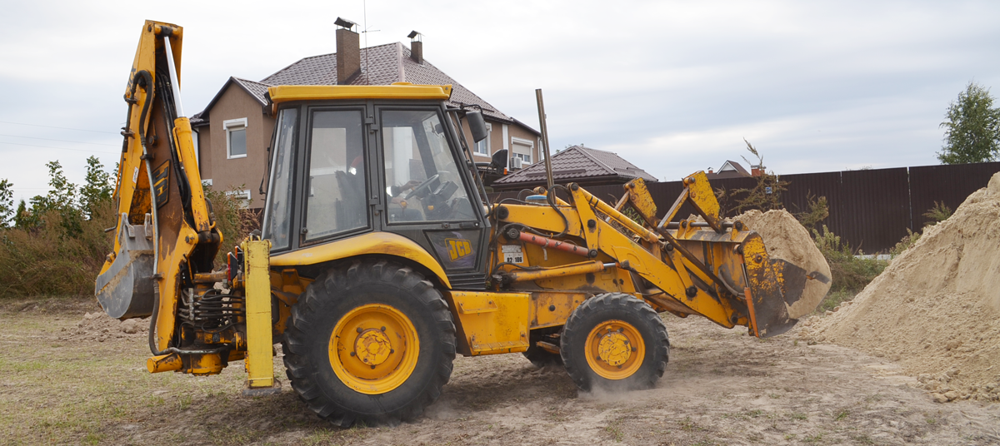

Аренда
экскаватора
 Экскаватор-погрузчик является одним из наиболее универсальных видов строительной техники, так-как область его применения достаточно широка.
Огромным преимуществом модели JCB 3XC является его самоходность. Благодаря осветительной технике, стопам и поворотам, он не нуждается в дополнительных расходах на перевозку тралом (как в случае со всеми видами гусеничных экскаваторов).
Также основу универсальности составляет наличие дополнительных насадок и приспособлений для разных сфер применения.
Наличие вил под передним ковшом экскаватора превращает его в мощнейший погрузчик, способный трансформировать как паллеты с грузом так и многотонные бетонные плиты. Имея собственную массу больше 7 тонн, он в разы превосходит по грузоподъемности среднестатистический складской погрузчик.
Очень популярной услугой на сегодняшний день является демонтаж зданий и сооружений. Здесь JCB 3CX может быть хорошим помощником, так-как имеет в своем арсенале насадку гидромолот. С её помощью можно как подготовить дорожное полотно под укладку асфальта, так и демонтировать фасад, фундамент либо напольную плиту.
Вслед за демонтажем зачастую вступает одна из основных функций экскаватора - погрузка передним ковшом. За счет большого объёма 1м3 за короткий строк JCB 3CX способен погрузить 3-х тонный ЗИЛ.
После погрузки строймусора либо грунта, довольно часто требуется очистить поверхность площади после работ. С помощью подвесной щетки , JCB 3CX легко превращается в уборочную технику с высокой степенью эффективности.
Также стоит отметить наличие заднего ковша с длинным выносом стрелы 4,3 м . Этот элемент идеально подходит для рытья фундаментов, бассейнов, расчисти небольших придомовых озер и многое другое.
Закажи услугу в декабре -
получи подарок в январе